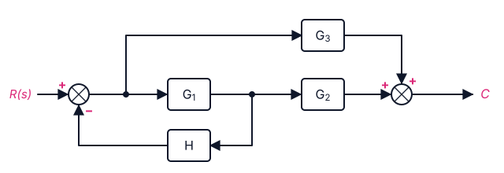
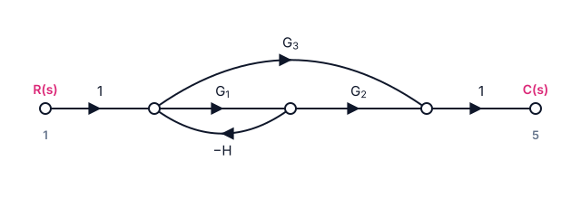
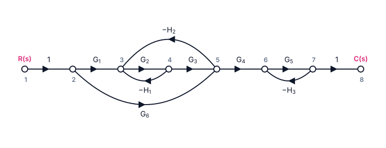

A signal flow graph (SFG), developed by S. J. Mason, uses nodes for signals and branches with gains for the relations between them. It gives the transfer function in one step, without repeated reduction: a shift from algebraic labour to visual logic.
Why signal flow graphs? The friction of iterative reduction
- The problem: block diagram reduction is essential but tedious.
- The inefficiency: at every step of simplification the whole diagram must be redrawn.
- The cost: a lot of time and page space, and more chances for algebraic errors.
Draw once, solve once. A signal flow graph is drawn only once, and Mason's gain formula is applied directly to it to give the transfer function, saving time and space.

The anatomy of a flow graph
- Node: a system variable (input, output or an internal state). Each node adds up all the signals entering it.
- Branch: a directed line joining two nodes. Its transmittance (gain) $G$ multiplies the signal travelling along it.
- Input node (source): has only outgoing branches. Output node (sink): has only incoming branches; if needed, add a branch of gain 1 to make one.
- Forward path: starts at the input node, ends at the output node and never visits a node twice. Its path gain $P_k$ is the product of all branch gains along it.
- Loop: a path that starts and ends at the same node without crossing any other node more than once. Its loop gain is the product of all the gains in that cycle. A loop on one node is a self-loop.
- Non-touching loops: loops that share no common node or branch. Finding these independent pairs is critical for the determinant $\Delta$.
Converting a block diagram to a signal flow graph
- Summing points and take-off points become nodes (the input and output too).
- Blocks become branches with their transfer function as gain. A minus sign at a summing point goes into the branch gain.
- Arrows give the branch direction.


Forward paths: $P_1 = G_1G_2$ and $P_2 = G_3$. One loop: $L_1 = -G_1H$, and it touches both paths (at node 2), so $\Delta_1 = \Delta_2 = 1$. Hence $T = \dfrac{G_1G_2 + G_3}{1 + G_1H}$, the same as block diagram reduction.
Mason's gain formula: the master key
$$T = \frac{C(s)}{R(s)} = \frac{1}{\Delta}\sum_k P_k\Delta_k$$
- $T$: the overall transfer function of the system.
- $P_k$: the gain of the $k$-th forward path; $K$ is the number of forward paths.
- $\Delta$: the graph determinant,
$$\Delta = 1 - \sum L_i + \sum L_iL_j - \sum L_iL_jL_k + \dots$$
that is, $1 -$ (sum of all individual loop gains) $+$ (sum of the gain products of all combinations of two non-touching loops) $-$ (sum of the gain products of all combinations of three non-touching loops) $+ \dots$ - $\Delta_k$: the path cofactor, $\Delta$ calculated for the part of the graph that does not touch the $k$-th forward path. Simple rule: $\Delta_k = 1 -$ (gains of the loops that do not touch the path) $+ \dots$; if every loop touches the path, $\Delta_k = 1$.
Worked example
Find the overall transfer function of the system whose signal flow graph is shown.

- Forward paths: $P_1 = G_1G_2G_3G_4G_5$ (1-2-3-4-5-6-7-8) and $P_2 = G_6G_4G_5$ (1-2-5-6-7-8).
- Individual loops: $L_1 = -G_2H_1$ (3-4-3), $L_2 = -G_2G_3H_2$ (3-4-5-3) and $L_3 = -G_5H_3$ (6-7-6).
- Non-touching pairs: $L_1$ and $L_3$, $L_2$ and $L_3$ (there is no non-touching triple, because $L_1$ and $L_2$ share node 3): $L_1L_3 = G_2G_5H_1H_3$, $L_2L_3 = G_2G_3G_5H_2H_3$.
- Determinant:
$$\Delta = 1 + G_2H_1 + G_2G_3H_2 + G_5H_3 + G_2G_5H_1H_3 + G_2G_3G_5H_2H_3$$
- Path cofactors: all three loops touch $P_1$, so $\Delta_1 = 1$. $P_2$ skips nodes 3 and 4, so $L_1$ does not touch it: $\Delta_2 = 1 + G_2H_1$.
- Transfer function:
$$\frac{C(s)}{R(s)} = \frac{G_1G_2G_3G_4G_5 + G_4G_5G_6\left(1 + G_2H_1\right)}{1 + G_2H_1 + G_2G_3H_2 + G_5H_3 + G_2G_5H_1H_3 + G_2G_3G_5H_2H_3}$$
Small example
For $G_1$ in series with an inner loop $G_2, H_2$, and outer feedback $H_1$: one forward path $P_1 = G_1G_2$; loops $L_1 = -G_2H_2$, $L_2 = -G_1G_2H_1$, which touch. So $\Delta = 1 + G_2H_2 + G_1G_2H_1$ and $\Delta_1 = 1$, matching Lesson 5.